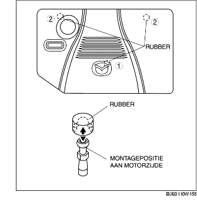

VERWIJDEREN/PLAATSEN AFDEKPLAAT [LF]
B3E011000149W01
1. Verwijder de plaat in de aangegeven volgorde.
-
Aanwijzing
-
• Neem de afdekplaat los en verwijder deze zoals in de afbeelding is aangegeven.

2. Plaats de plaat in de omgekeerde volgorde van verwijderen.